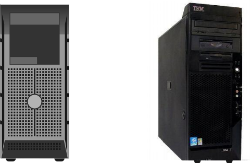

Your PC Needs
*Sound of a PC starting up from https://www.freesound.org/
Types of Computers
To understand what computer type you will need and ultimately what parts you will need, we need to go over the different types of computers.
There are also servers but those do not qualify since they are used more for commercial purposes.

Gaming computers are made for what they are named for, gaming. These often focus more of the budget on a good graphics card and CPU to get the highest framrates for the money. If you plan on using your computer to play games, then this is the build for you. These tend to be more expensive since you will need a graphics card, especially if you want to play new titles. So it is important to do some research on which card will fit your needs and budget.

Home theater computers, often referred to as HTPCs, are builds that are made specifically to power a Home Theater. They are generally in a small form factor case, though not nessacary. They are able to stream media over the web, and play movies at a high resolution. Typically a dedicated graphics card is recommended for these builds, though they can be skipped on a tight budget at a sacrifice to performance. The small form factor can impact the price some as well but if you dont mind a larger case it shouldn't be an issue.
Workstations are favored by game developers, video producers and song makers. They typically feature a very powerful processor with plenty of RAM. for video production and game development a powerful dedicated graphics card is highly recommended. Since most rendering applications are optimized for multi-threaded performance, they usually have a multi-core CPU. These will be some of the most expensive builds. If you plan on building one, set aside a larger budget if possible.
.jpg "Mini PC Build")
Due to the low amount of power needed in these builds, they are usually the cheapest. There isn't a need for a dedicated graphics card. These can come in very small form factors as well. if all you plan on doing is browsing the web this build will be optimal for you. It may even be better to buy a mini PC for this if you want one like the picture above.